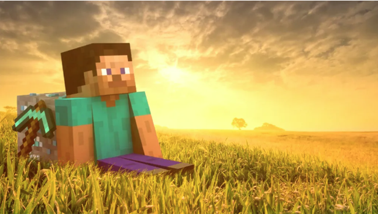
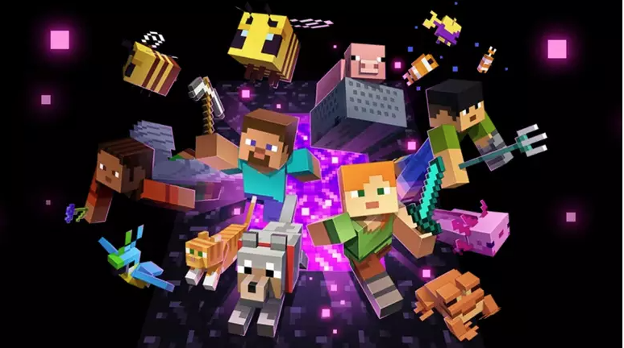
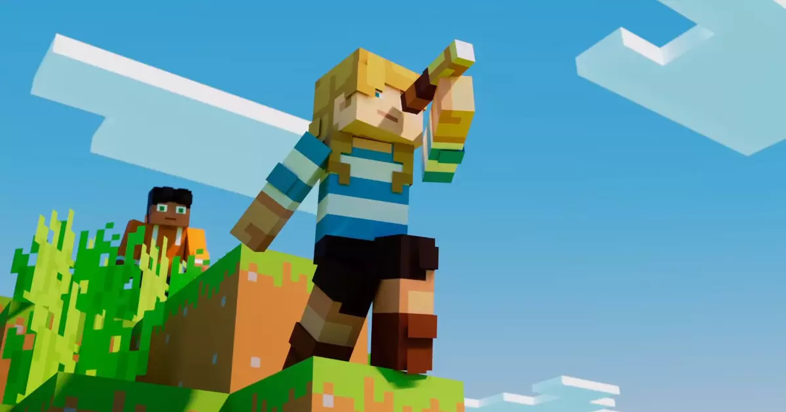

SOBRE O MINECRAFT
Se você está aqui é porque teve alguma dúvida sobre algo específico do jogo ou porque é um iniciante, o minecraft consegue ser bem complexo de ínicio mas ao passar do tempo fica mais fácil do que você imagina.
Com suas vastas possibilidades de construção, exploração e criatividade, o jogo oferece uma experiência rica e envolvente que só se torna mais divertida conforme você se familiariza com suas mecânicas
Para começar, é útil se concentrar em aprender o básico: coletar recursos, construir abrigo e explorar o mundo. À medida que você avança, pode começar a experimentar com diferentes tipos de construções, ferramentas e estratégias.
Atualmente o minecraft conta com mais de 1 bilhão de jogadores contando com todas as plataformas, cada jogador exibe uma criatividade e estratégias diferentes para evoluir no jogo, aqui você irá aprender sobre essas estratégias. Aproveite!
NOSSO SITE
A ideia do site é atingir todos os jogadores de minecraft independente do nível do jogador, aqui você encontra conteúdo sobre a história do desenvolvimento do jogo, teorias sobre a história aprofundada, como fazer farms ( Das mais fáceis até as mais ROUBADAS ) e também os mods mais utilizados pelos jogadores.
O conteúdo geral do site é entreter a comunidade do minecraft e ajudar na aprendizagem de técnicas e mecânicas do jogo,
AVISO
O site ainda está sendo desenvolvido aos poucos e pode conter algumas inconsistências ao decorrer do utilizamento,esse site não irá possuir fins lucrativos até o seu desenvolvimento final
